Towards Fully-fledged GPU Multitasking
via Proactive Memory Scheduling
Abstract
The limited HBM capacity has become the primary bottleneck for hosting an increasing number of larger-scale GPU tasks. While demand paging extends capacity via host DRAM, it incurs up to 78 slowdown due to the massive working sets and poor locality of GPU workloads. We observe, however, that GPU memory access patterns are inherently predictable via kernel launch arguments and their asynchronous execution nature. Leveraging this, we propose MSched, an OS-level scheduler that extends GPU context switching to include proactive working set preparation, thereby coalescing fragmented, eventual, and expensive page faults into a single efficient migration. MSched employs a template-based approach to predict working sets with near-perfect accuracy and proposes a co-design between task scheduler and memory manager to enforce a globally optimal page placement policy. Evaluation demonstrates that MSched outperforms demand paging by up to 11.05 for scientific and deep learning workloads, and 57.88 for LLM under memory oversubscription.
Introduction
Graphics Processing Units (GPUs) have emerged as the default compute substrate across cloud [aegaeon-sosp25, blitzscale-osdi25], edge [edgenn-icde23], and personal devices [lohan-arxiv24, spinfer-eurosys25]. A growing range of computations are now routinely offloaded to GPUs, including media processing [multimedia-tcc20, clij-naturemethods20], analytics [vectorsearch-fast25], databases [gpudb-vldb23], and machine learning [reef-osdi22, tgs-nsdi23]. This widespread adoption creates a pressing demand for running multiple applications concurrently on a single GPU [towards-arxiv25, xsched-osdi25, reef-osdi22, gpu-mt-survey-tpds22]. For instance, on personal devices like AI PCs, users might be editing presentations with GPU-powered text completion and image generation in foreground, while AI agents and file indexing for RAG service run in background. Due to limited hardware resources, these applications must concurrently execute on the sole GPU. In the cloud, providers also seek to colocate multiple jobs on one GPU [tgs-nsdi23, pipeswitch-osdi20, shepherd-nsdi23, paella-sosp23] to maximize utilization and save costs.
Prior research on GPU multitasking [xsched-osdi25, reef-osdi22, gpreempt-atc25, effisha-ppopp17, flep-asplos17, tally-asplos25] has primarily focused on compute scheduling, developing various techniques to multiplex GPU computation resources among tasks. These systems implicitly assume that the GPU’s high-bandwidth memory (HBM) can accommodate all concurrent applications. However, an increasing number of applications today become AI-powered and rely on GPU acceleration [aiservice-apsys25, smartapp-arxiv23, aiui-arxiv24]. Meanwhile, their memory footprints also escalate rapidly, driven by exponentially growing model sizes and high-resolution, multi-modal inputs. This assumption of sufficient memory no longer holds in most cases. Over the past decade, the HBM capacity of GPUs in each class has only increased by several to tens of gigabytes [nvidia-gpu-list, amd-gpu-list], thereby becoming the primary bottleneck for hosting an increasing number of larger-scale GPU applications concurrently.
To handle GPU memory oversubscription, the conventional wisdom is to enable OS demand paging (e.g., Unified Memory), spilling data to larger but slower backing storage such as host CPU DRAM or SSDs [cuda-um, hip-um]. When the system performs GPU context switching, it lazily swaps only the minimal execution state (e.g., registers and on-chip shared memory) while deferring the working set transition. Memory swapping happens when pages are actually accessed, using GPU virtual memory and page faults to passively migrate pages into HBM via interconnects like PCIe or NVLink C2C [nvlinkc2c, nvlinkc2c-benchmark].
This lazy and passive mechanism is well-suited for traditional CPU workloads, which typically exhibit random and unpredictable memory access patterns but have high temporal locality and small working sets, thereby incurring an acceptable overhead of occasional page faults. GPUs, however, violate these premises. GPU applications often have poor locality and massive memory footprints, accessing gigabytes of data within short execution bursts [forest-isca25, earlyadaptor-ispass23, etc-asplos19]. Moreover, GPU page faults are far more expensive than on CPUs: a fault locks the TLB of the GPU compute unit (CU) [deepum-asplos23, cuda-um-opt], stalling thousands of concurrent threads on that CU, and requires CPU intervention to resolve the fault. Our experiments in Fig. 1 quantify this pathology: simply applying demand paging to manage oversubscribed memory for concurrent applications (LLM inference) precipitates a staggering 78 slowdown. This collapse stems from severe page thrashing, which induces an average of 9,210 page faults per decoding step (12.7 ms). This suggests that this paradigm is ill-suited for supporting memory-demanding GPU multitasking.
Opportunity. We observe that GPU applications have highly predictable memory access patterns, unlike CPU programs, which behave as black boxes to the OS. Most GPU kernels operate on data regions explicitly defined by their launch arguments (e.g., pointers, dimensions, and strides). Moreover, GPU kernels are launched asynchronously in a straightforward sequence, making their complete execution order visible to the OS beforehand. This creates a natural opportunity to predict future memory accesses prior to execution.
Key insight. This predictability motivates us to rethink the very definition of context switching for GPU multitasking. We argue that the notion of GPU “context” should expand beyond the minimal on-chip execution state to include its working set memory. As GPU multitasking workloads often have working sets that exceed HBM capacity, memory itself should also be proactively “scheduled”. In other words, instead of passively handling eventual and expensive page faults during execution, the system should eagerly and proactively prepare the future working set memory for the upcoming task as an integral part of the context switch routine.
Our approach. We introduce MSched, the first OS-level scheduling system designed for GPU memory sharing among multiple concurrent tasks. MSched extends GPU memory with host DRAM and treats working set memory of a GPU task as a first-class citizen of its execution context. MSched achieves this through two core mechanisms. First, it intercepts GPU kernel arguments to build an online forecast of each task’s future memory accesses. Second, MSched uses this prediction to migrate the corresponding memory pages of the upcoming task into GPU HBM during context switching. This approach coalesces expensive, fragmented page faults into efficient, batched memory transfers, thereby significantly reducing the overhead of memory oversubscription.
Challenges. Realizing this vision of extended context switch, however, is non-trivial. The key challenge lies in ensuring high prediction accuracy in both spatial and temporal aspects. First, the prediction must be precise in determining the spatial regions of future memory accesses: over-prediction wastes valuable bandwidth on unnecessary data, while under-prediction triggers costly page faults that nullify the benefits of proactive memory scheduling. Second, according to Belady’s algorithm [opt-1966], the temporal sequence of memory accesses directly determines the optimal page placement policy, which is the cornerstone of efficient memory scheduling. However, in multitasking scenarios, frequent context switches cause memory accesses from multiple concurrent tasks to interleave, making it difficult for the system to infer the exact timing of each access and thereby reduce data migration.
MSchedovercomes these challenges with two key mechanisms: template-based memory prediction and a scheduler-memory co-design. To achieve spatial accuracy, we distill the memory access behaviors of modern GPU workloads into three fundamental templates. MSched automatically infers the mapping between kernel arguments and accessed memory regions based on these templates, allowing it to precisely (0.25% false negative and 0.00% false positive) predict the working set of each kernel using online argument values. To resolve temporal interleaving, MSched exposes the scheduler’s task timeline—a common scheduling primitive that describes future task order and timeslice allocation—to the memory manager. This enables the system to reconstruct a global memory access sequence, thereby enforcing optimal page placement policy aligned with the scheduler’s decisions.
We evaluate MSched under multitasking memory oversubscription. For scientific computing and deep learning workloads, MSched improves total throughput by 11.05, 9.35, and 7.52 over the native demand paging under 150%, 200%, and 300% memory subscription, respectively. These speedups are magnified for memory-intensive LLM inference, reaching 57.88, 44.79, and 33.60, effectively sustaining 74.09%, 58.23%, and 43.01% of in-HBM performance without oversubscription. Furthermore, MSched outperforms SUV [suv-micro24], a demand paging optimization for single-task execution, by 7.18 under 300% memory subscription. Compared to compute-only scheduling (XSched [xsched-osdi25]), MSched reduces the latency of real-time tasks by 4.06 while boosting the throughput of colocated best-effort tasks by 2.43. We plan to open-source MSched to facilitate further development.
Background
Characterizing GPU Tasks
Unlike general-purpose CPU workloads, which often exhibit complex and branching control flows, GPU tasks follow a structured, host-driven execution model. Typically, the host program allocates buffers in GPU memory to hold data such as inputs, outputs, model parameters, and intermediate results. It then transfers input data into these buffers via memory copy commands. Next, the host launches a series of GPU kernels to perform algorithmic computations on the data. Finally, the processed results are copied back to the host. From the OS perspective, a GPU task simply behaves as a sequence of memory copy and GPU kernel commands [xsched-osdi25].
A distinct feature of this model is the decoupling of command launch and execution. Instead of executing immediately, commands launched by the host CPU are pushed into a software-managed FIFO queue, allowing the host thread to proceed launching the next command. The GPU’s on-chip command processor, e.g., NVIDIA GPU System Processor (GSP) [nvidia-gsp], then fetches and executes these commands from the queue in strict sequence. This asynchronous nature exposes a window of future commands—queued but not yet executed—offering the OS a unique opportunity to proactively analyze and predict the resource requirements of upcoming commands before they actually run on the GPU.
Scheduling GPU Tasks
To support multitasking, modern GPUs employ time-sharing scheduling to multiplex hardware resources among concurrent GPU tasks. This approach has become the mainstream paradigm in GPU design and deployment due to its superior flexibility and robust fault and performance isolation [effisha-ppopp17, flep-asplos17, reef-osdi22, tally-asplos25, gpreempt-atc25]. In this model, the GPU acts as a preemptible resource, arbitrating execution among multiple tasks by performing context switching.
GPU context switching. Analogous to CPUs, a GPU execution context is traditionally defined as the minimal architectural states resident on the compute units (CUs) that must be saved and restored to ensure correct execution continuation. This includes register files, on-chip shared memory (scratchpad), stack pointers, GPU page table bases, and control flow states (e.g., program counters, active masks, barrier states), with a total size of approximately 200KB per CU. Modern GPUs, such as NVIDIA GPUs after Pascal architecture and Intel Xe GPUs, have natively supported preemption via context switching [nvidia-cilp, xsched-osdi25, intel-gpu-specs, intel-gpu-context] to schedule multiple tasks. When preemption is requested (e.g., time slice expiration), the GPU command processor broadcasts an interrupt to the CUs, immediately halting kernel execution and trapping into a software handler. The handler saves the context to GPU HBM and terminates the current kernel. The kernel of the subsequent task is then scheduled onto the CUs to restore its context and resume execution, thereby completing a typical GPU context switching operation. This mechanism has been adopted by state-of-the-art GPU multitasking systems [xsched-osdi25, gpreempt-atc25, gcaps-ecrts24] to enable flexible and preemptive GPU scheduling.
GPU Memory Multiplexing
The untenable assumption of sufficient memory. While existing systems [xsched-osdi25, reef-osdi22, tally-asplos25, gpreempt-atc25] have effectively scheduled GPU compute resources across multiple tasks, they largely overlook the multiplexing of memory resources [towards-arxiv25]. Most scheduling systems operate under an implicit assumption of sufficient memory: they assume that the aggregate memory footprint of all concurrent tasks can simultaneously reside in the GPU HBM. Under this premise, context switching merely involves saving and restoring the minimal architectural states (as described in §2.2), enabling the upcoming task to execute seamlessly as if it held exclusive access to the GPU.
However, this assumption is becoming increasingly untenable. On one hand, the ubiquity of AI-powered applications—ranging from background system agents to foreground interactive tools—has led to a surge in the number of tasks contending for the GPU [aiservice-apsys25, smartapp-arxiv23, aiui-arxiv24]. On the other hand, the memory footprint of individual tasks is exploding. Modern GPU workloads, particularly large language models (LLMs), demand massive memory allocations not only for model parameters but also for intermediates and caches. Consequently, the total memory demand of concurrent tasks frequently exceeds the HBM capacity of even high-end GPUs, creating a barrier that simple compute scheduling cannot scale beyond.
Demand paging as a workaround. To share the insufficient HBM across these memory-hungry tasks, the conventional solution [tgs-nsdi23] is to enable demand paging for GPUs, such as CUDA Unified Memory (UM) [cuda-um] and AMD HIP UM [hip-um]. This mechanism extends the GPU memory space with host CPU DRAM as a cheaper and larger backing storage. In this architecture, the GPU driver maintains a unified virtual address space where the physical pages are dynamically migrated between device HBM and host DRAM. When a running kernel accesses a virtual page that is not resident in HBM, the GPU Memory Management Unit (MMU) raises a page fault, temporarily stalls the execution of the faulting compute unit and signals an interrupt to the CPU. The GPU driver on the CPU catches the interrupt and migrates the faulting page from host DRAM to HBM through high-bandwidth interconnects like PCIe or NVLink C2C [nvlinkc2c, nvlinkc2c-benchmark]. If the HBM is already full, the driver must evict pages to free up space. Once the eviction and migration complete, the driver updates the GPU page table and resumes the stalled compute unit. By transparently and passively migrating pages upon access, demand paging can be directly integrated into existing scheduling systems and theoretically allows multiple memory-consuming tasks to oversubscribe GPU memory.
Rethinking GPU Context Switching
While demand paging extends GPU memory beyond its physical HBM capacity, its performance suffers from severe degradation in multitasking scenarios. Based on our experiments in Fig. 1, simply enabling demand paging (UM) for oversubscribed concurrent LLM inference tasks results in a 78 slowdown compared to running with sufficient HBM. This pathological degradation compels us to examine why this passive demand paging—effective in the CPU world—fails in the scenario of GPU multitasking. We identify three key limitations as follows.
Lengthy control plane of GPU page faults. Unlike CPUs, GPU page faults are exorbitantly expensive due to hardware constraints. First, as mentioned in §2.3, resolving a GPU page fault necessitates intervention from the driver on the host CPU, entailing multiple interrupt round-trips across the PCIe bus. Our measurements on RTX 5080 GPU (PCIe 5.0) show that handling a single GPU page fault takes 31.79 , of which only 1.35 is spent on data transfer, while the remaining 96% is spent on control plane. Second, in terms of indirect overhead, a page fault triggered by a single GPU thread locks the TLB of the entire CU and prevents further address translations until the fault is resolved [deepum-asplos23, cuda-um-opt], stalling thousands of concurrent GPU threads on that CU. The massive parallelism of GPUs ironically amplifies the penalty of these stalls, causing severe underutilization of the hardware.
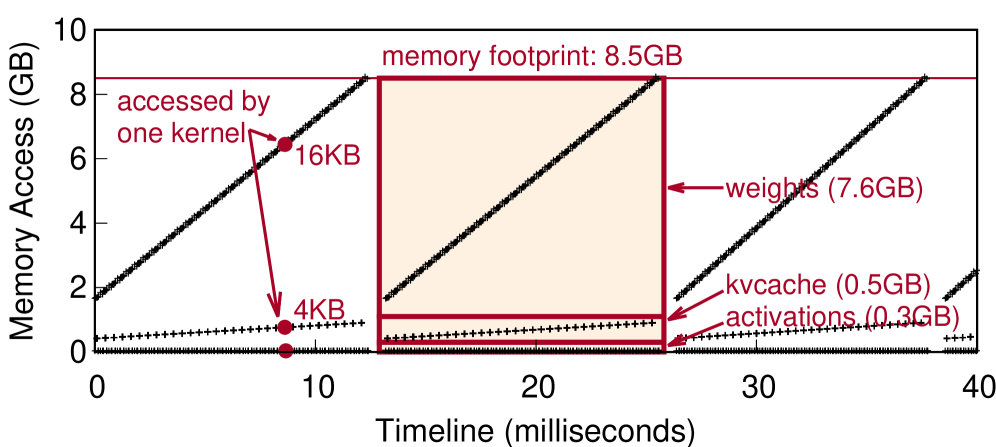
Poor locality and large working set. Demand paging is specifically designed for workloads with strong temporal locality and small active working sets that rarely exceed the physical memory capacity. However, GPU applications often violate these premises. As illustrated in Fig. 2, typical GPU workloads (e.g., LLM inference) frequently touch massive data, essentially their entire memory allocation (8.5 GB), within short periods (12.7 ms). Such streaming-like access pattern exhibits poor temporal locality and large working sets whose aggregate size across concurrent tasks easily surpasses HBM capacity. Consequently, demand paging triggers storms of page fault and severe memory thrashing, amplifying the fault handling overhead to a prohibitive level.
Scheduling-induced task switching. Demand paging passively ignores the complete working set shift introduced by context switching in multitasking scenarios. As a result, the incoming task is forced to fault in its working set page-by-page and cold start after every timeslice. Moreover, existing optimizations for demand paging [etc-asplos19, swapadvisor-asplos20, deepum-asplos23, suv-micro24] focus solely on intra-task memory management while ignoring the impact of inter-task scheduling and context switches on memory behavior. This oversight leads to severe page migration conflicts between tasks, preventing them from effectively scaling to multitasking workloads.
Opportunity. GPU workloads have a fundamental characteristic: their memory access behaviors are inherently predictable and explicitly exposed to the OS. First, GPU kernel launch arguments specify the memory buffers that the kernel will read from or write to. For example, a matrix multiplication kernel matmul(A, B, C,…) typically reads and multiplies the matrices stored in pointers A and B, writing the result to pointer C. Second, as mentioned in §2.1, a GPU task is composed of a well-defined sequence of kernels launched asynchronously, exposing a deterministic order of future kernel execution. This predictability empowers the OS to forecast the working set of GPU tasks ahead of execution.
Extending GPU Context Switching. The predictability nature substantially changes the situation of GPU scheduling: it eliminates the uncertainty of memory access that compels CPUs to rely on demand paging. We argue that GPU memory management should no longer be a passive fault-handling manner but a proactive scheduling paradigm. Specifically, we propose to expand the definition of a GPU context switch to include the proactive restoration of working set memory. Instead of relying on page faults to trigger memory migration, the system should leverage the predictability to identify the memory required by the upcoming task and eagerly preload it into HBM before the task resumes execution. The benefits of this paradigm shift are twofold. First, it eliminates the control-plane overhead of handling massive page faults and the indirect cost from blocking thousands of other concurrent GPU threads. Second, it batches fragmented and page-by-page data movement into one complete and efficient operation. Our evaluation on an NVIDIA RTX 5080 GPU with PCIe 5.016 interconnect highlights this disparity: while fine-grained migration via page faults yields a meager effective throughput of 0.12 GB/s, batched transfer saturates the interconnect at 41.7 GB/s—a 347 improvement in bandwidth efficiency.
MSchedOverview
Building on the idea of proactive memory scheduling and the augmented notion of context switching, we introduce MSched, the first OS-level scheduler tailored for multitasking GPU workloads under memory oversubscription. MSched extends GPU memory capacity by spilling inactive memory pages to host CPU DRAM and schedules data movement to keep the active task’s working set resident in GPU HBM. It first identifies the memory accesses of each task based on its kernel launch arguments. Next, unlike conventional demand paging, MSched proactively migrates memory during context switches: it evicts currently idle pages to host DRAM while simultaneously loading the next task’s working set into GPU HBM, enabling execution to proceed without page fault stalls.
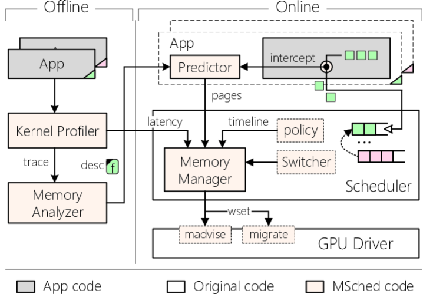
Architecture and Workflow
Fig. 3 illustrates the architecture and workflow of MSched. It consists of an offline part, which profiles the kernel execution latency and analyzes the argument-memory relationship, and an online part, which predicts and proactively schedules the memory for all running tasks in the system.
Task analysis (Offline). During the offline phase, a kernel profiler measures the execution latency of every GPU kernel in user applications. It also intercepts kernel arguments and records the memory addresses touched by each kernel. A memory analyzer then examines these arguments and memory traces to construct a mapping between them based on a set of predefined templates. Subsequently, it generates a description file that encapsulates kernel latencies and formulas for calculating memory regions. This offline phase can be integrated into the compiler or executed during installation.
Memory scheduling (Online). The online part of MSched comprises four key modules: a predictor, a task scheduler, a memory manager, and a modified GPU driver.
Predictor. The predictor is a dynamically linked library (DLL) that is preloaded into each GPU application process. It intercepts kernel launch APIs and their arguments, accurately predicting the memory pages each kernel will access based on the argument-memory mapping generated in the offline phase. The predicted memory access information is then attached to the kernel metadata and passed to the memory manager.
Task scheduler (Extended). To schedule GPU tasks, MSched extends a GPU scheduler (XSched [xsched-osdi25]) that enables preemptive GPU context switching among multiple tasks. When switching to a new task, the context switcher triggers the memory manager to perform proactive memory scheduling.
Memory manager. Invoked by the scheduler upon context switching, the memory manager evicts pages to host CPU DRAM and follows the optimal replacement policy (OPT, i.e., Belady’s algorithm [opt-1966]) to minimize the overall migration volume. This process is guided by the predicted memory pages, profiled kernel latencies, and the scheduler’s task timeline. The manager then accurately populates the working set (wset) of the next task into GPU HBM via ioctl of the GPU driver.
GPU driver (Extended). MSched modifies the kernel-mode GPU driver and implements a new madvise ioctl to enforce the OPT eviction sequence, and a migrate ioctl to proactively transfer memory between DRAM and HBM. MSched exploits the dual DMA engines widely available in modern GPUs [cuda-guide, amd-ce, demystify-rtas24] and the full-duplex bandwidth of PCIe interconnect, enabling parallel page eviction and population.
Transparency. It is important to note that MSched is implemented at the OS level, providing complete transparency to user applications. It requires neither application modifications nor access to kernel source code, ensuring full compatibility with closed-source platforms such as CUDA.
Challenges for Proactive Memory Scheduling
Despite the simplicity of the idea, realizing such proactive memory scheduling and extended context switching is challenging, especially in achieving accurate memory prediction in both spatial and temporal dimensions. First, in terms of spatial accuracy, prediction must be precise in identifying which memory pages will be accessed within the microsecond-scale window between kernel launch and execution. If the prediction fails to cover the entire working set (under-prediction), the system will fall back to inevitable and inefficient page faults. Conversely, over-prediction not only migrates superfluous data but, more critically, evicts pages that should have been retained for other tasks, causing sustained performance degradation in subsequent tasks. Second, the system must infer the exact temporal order of future accesses under the interleaving of multiple concurrent tasks, which serves as the basis for the globally optimal page replacement policy (OPT). Although the execution latencies of individual kernels are deterministic [clockwork-osdi20, rammer-osdi20, reef-osdi22], scheduler decisions significantly reshape the sequence in which memory is consumed. Therefore, optimizing the global migration volume requires aligning eviction and placement with the plan of computation scheduler to avoid policy conflicts. We address these challenges through template-based memory prediction and a co-design between task scheduling and memory management, as detailed in the following two sections.
Memory Access Prediction
The efficacy of MSched hinges on its ability to accurately identify the working set of each GPU task at runtime. The primary objective is to maximize prediction accuracy: minimizing the false negative rate (under-prediction) to prevent expensive page faults, while simultaneously minimizing the false positive rate (over-prediction) to avoid wasting interconnect bandwidth and polluting the limited GPU HBM with unused data. Furthermore, this prediction mechanism must be highly efficient, as the asynchronous time window between command launching and execution is typically microsecond-scale [picker-arxiv24], leaving little budget for per-kernel analysis.
A GPU task typically comprises memory copy commands and compute kernels. Predicting the memory footprint of copy commands is straightforward, as their semantics are explicitly defined by the API: the source, destination, and transfer size are provided as direct arguments. However, predicting the memory access of GPU kernels presents a significant challenge. Due to the flexible programmability of GPUs, kernel semantics are opaque to the OS. Although the base addresses of data buffers are passed as kernel arguments, the actual range of memory accessed is implicitly determined by the kernel’s internal logic. Consequently, the crux of the problem lies in precisely inferring the memory access boundaries for arbitrary GPU kernels.
Naive Solution: Allocation-granularity Prediction
Given that any memory region accessed by a kernel must have been allocated via GPU memory management APIs (e.g., cudaMalloc), a naive solution [phos-sosp25] tracks all memory allocation and deallocation requests to maintain a map of valid memory buffers. Upon a kernel launch, the system checks each pointer argument. If a pointer falls within a known allocated buffer, the system conservatively predicts that the kernel will access the entire buffer.
While conceptually simple, this allocation-based approach suffers from severe over-prediction in practice due to two aspects. Aggregated allocation: applications often consolidate multiple data objects into a single large contiguous buffer. For example, llama.cpp [llamacpp] in Fig. 2 allocates monolithic buffers for the entire model weights (7.6 GB) and activations (0.3 GB), subsequently slicing them for individual layers. Although a specific kernel only accesses a small, layer-specific slice (16 KB–60 MB), the OS perceives the kernel pointer as referencing the entire allocation. Similarly, modern deep learning frameworks like PyTorch [pytorch-malloc, towards-arxiv25], TensorFlow [tensorflow-malloc], and JAX [jax-malloc] also pre-allocate massive memory pools (often spanning GBs) to bypass the OS allocator and implement customized sub-allocation internally. Sparse access: even when a memory buffer is exclusively dedicated to a single data object, the kernel may only touch a fraction of it. A prime example is the KV cache in LLMs: while the buffer is allocated for the maximum context length, the inference kernel only accesses tokens up to the current sequence length (4 KB).
Our empirical analysis in Table 1 confirms the inadequacy of this approach. While the false positive rate is 31% for scientific computing benchmarks, it surges to 80% on average for standard deep learning workloads. Most critically, for LLM inference, the false positive rate reaches an alarming 99.7%. This indicates that most of the memory pages predicted by this naive approach are not actually accessed, leading to gigabytes of unnecessary migration and HBM pollution.
| Application | Model | Allocation | Template | ||
| (F-) | (F+) | (F-) | (F+) | ||
| Rodinia | / | 0.10 | 31.16 | 0.92 | 0.00 |
| PyTorch/Train | R | 0.00 | 52.19 | 0.52 | 0.00 |
| PyTorch/Infer | R | 0.03 | 89.44 | 0.17 | 0.00 |
| V | 0.03 | 78.32 | 0.00 | 0.00 | |
| I | 0.02 | 89.32 | 0.23 | 0.00 | |
| D | 0.00 | 90.84 | 0.00 | 0.00 | |
| llama.cpp | L | 0.04 | 99.70 | 0.00 | 0.00 |
Our Approach: Template-based Prediction
We observe that beyond base pointers passed as kernel arguments, the size and structure of a kernel’s memory access region also inherently correlate with its launch arguments, including kernel calling arguments and launch configuration (e.g., grid and thread-block dimensions). Our approach, therefore, analyzes the runtime history of kernel executions to discover the mapping between launch arguments and memory access boundaries, and then encodes this mapping into concise formulas that can be efficiently evaluated online.
Kernel profiler. To infer these mappings, we developed an offline kernel profiler based on NVBit [nvbit-micro19], a binary instrumentation tool for GPU kernels. The profiler instruments every memory access instruction in the target kernel and records the accessed addresses to identify the memory regions the kernel touches. Meanwhile, it intercepts the kernel launch API to capture all corresponding launch arguments. We profile representative GPU workloads spanning scientific computing, deep learning inference and training, and LLMs.
Access pattern templates. We analyze the memory traces collected by the profiler and classify the access behaviors of GPU kernels. The results summarized in Table 2 reveal that despite the algorithmic diversity of GPU kernels, their memory access patterns are highly structured. Common to all patterns is that the memory region begins with a base address provided by a specific pointer argument, while the spatial extent (i.e., size and shape) intrinsically follows one of the three fundamental templates listed below:
-
•
T1: Fixed-size access (77%). The size of the accessed region is fixed across all invocations of the kernel, either independent of the launch arguments, or determined by invariant arguments. This pattern is the most common, since kernels are often invoked in a consistent manner throughout the application’s lifecycle, with most launch arguments remaining unchanged.
-
•
T2: Linear-size access (18%). The accessed region is contiguous, but its size scales linearly with the product of specific launch arguments. This pattern is prevalent in ML workloads, where the number of elements or tensor dimensions are explicitly specified by arguments. For example, in kernel vector_add(A, B, C, N), the accessed sizes of buffers A, B, and C scale linearly with element count N, while in matrix_mul(A, B, C, M, N, K), they scale with dimensions MK, KN, and MN, respectively.
-
•
T3: Strided access (5%). The access pattern consists of multiple discontiguous memory chunks separated by regular strides, where the stride and chunk size are also linear to the product of specific launch arguments. This pattern typically arises in ML workloads, when kernels operate on specific dimensions of high-dimensional tensors.
| Application | Model | Fixed | Linear | Strided | Others |
| Rodinia | / | 99.08 | 0.00 | 0.00 | 0.92 |
| PyTorch/Train | R | 84.94 | 13.21 | 1.33 | 0.52 |
| PyTorch/Infer | R | 83.96 | 14.01 | 1.86 | 0.17 |
| V | 83.56 | 6.69 | 9.75 | 0.00 | |
| I | 69.50 | 20.45 | 9.82 | 0.23 | |
| D | 60.81 | 34.24 | 4.94 | 0.00 | |
| llama.cpp | L | 59.84 | 38.51 | 1.65 | 0.00 |
A single kernel may exhibit a combination of these three patterns. Together, our three templates cover nearly all memory access patterns found in typical GPU workloads. The remaining cases (less than 1%) arise from indirect memory access (pointer-chasing), where the base address originates from a value in GPU memory rather than from arguments—a behavior that is extremely rare in GPU workloads [phos-sosp25, picker-arxiv24].
Memory analyzer. Motivated by these findings, we build an offline memory analyzer that consumes the profiled per-kernel memory traces and launch arguments, and derives the mapping between them according to the three templates. The analyzer first scans the kernel’s argument list to identify 64-bit integer values that appear as beginning addresses of the memory regions in the trace. Next, it attempts to match the spatial extent of these regions against the three templates in order. If the region size is invariant across all invocations of this kernel, it is classified as T1. Otherwise, the analyzer enumerates the remaining 64- and 32-bit integer arguments, as well as their combinations (products), to check for linear proportionality with the region’s size (T2) or stride (T3). Upon a successful match, the analyzer records the specific argument indices and the corresponding linear coefficients to formulate the prediction rules. Note that for C-style struct arguments, the analyzer slices them into 64- and 32-bit integers and treats each of them as an independent candidate. Since the total number of arguments is small (ranging from a few to dozens), the analysis can typically complete within seconds.
Memory access prediction. We implemented an online predictor as a preloaded DLL. It intercepts all GPU command launch APIs and utilizes the captured runtime launch arguments to evaluate the offline-derived prediction formulas, thereby calculating the precise memory access regions of each command (within a microsecond). The predictor then aligns these accessed regions to page boundaries, attaches the prediction results to the command metadata, and forwards them to the memory manager for proactive scheduling.
Prediction accuracy. We evaluate the accuracy across scientific and ML workloads. While the naive allocation-based approach captures all accesses, it incurs a high false positive rate due to coarse-grained prediction. In contrast, our template-based prediction achieves near-perfect coverage (0.25% average false negative) with zero false positives. This ensures that MSched precisely identifies the actual working set without wasting resources on dormant data. Note that MSched retains demand paging as a fallback. The rare false negatives are handled transparently via standard page faults, ensuring execution correctness with negligible performance overhead.
Proactive Memory Scheduling
Task Scheduler
To implement the extended context switch and proactive memory scheduling, MSched extends XSched [xsched-osdi25], an open-source GPU scheduler. XSched leverages the GPU driver’s timeslice group (TSG) [nvidia-tsg, gcaps-ecrts24] control interface to preemptively suspend the running task and perform context switching to the next one based on a user-defined scheduling policy. MSched augments the context switch routine: upon suspending the current task and saving its architectural state, the scheduler invokes the MSched memory manager. The manager then evicts inactive pages to create sufficient space and populates the predicted working set of the next task into HBM.
However, achieving efficient memory scheduling requires not only spatially precise working set prediction, but also temporal accuracy, as the accessing order directly determines the optimal page placement. According to Belady’s algorithm [opt-1966], the theoretically optimal strategy (OPT) is to evict the page that will not be referenced for the longest time. The asynchronous and sequential nature of GPU tasks, combined with our template-based prediction technique, offers a unique opportunity to implement this policy—an objective that is elusive in the CPU world due to the opaque execution flows.
Exploiting this opportunity is non-trivial under multitasking. While the execution latency of individual GPU commands (kernels and memory copies) is deterministic and stable [reef-osdi22, rammer-osdi20, clockwork-osdi20], context switching between tasks fundamentally alters the global execution timeline. The interleaving of commands from concurrent tasks disrupts the sequential continuity observed in individual tasks. Consequently, without awareness of the scheduling plan, it is impossible to accurately predict the absolute timing of future memory accesses, thereby undermining the implementation of the OPT policy.
Task scheduling timeline is the Rosetta Stone. To address this challenge, MSched co-designs the task scheduler and memory manager. We modified the scheduling policy module to expose its task scheduling timeline as an additional argument when the context switcher invokes the memory manager. The task scheduling timeline is an ordered sequence of task entries and allocated timeslices akin to the run queue in OS schedulers [modern-os, linux-runqueue]. In MSched, this simple structure plays a pivotal role. It provides the ground truth for the future execution timeline—which task will execute, for how long, and in what order. This enables the memory manager to deterministically resolve the global memory access sequence and enforce the optimal replacement policy, reducing overall migration volume. Moreover, the timeline is easy to generate and effectively decouples the scheduling policy from memory management, allowing MSched to support diverse policies.
Memory Manager
Armed with the requisite inputs—accurate working set from the predictor, command execution latency from the kernel profiler, and the task timeline from the scheduler—MSched is able to implement efficient proactive memory scheduling. Fig. 4 illustrates the memory scheduling logic of MSched.
Distributed metadata management. To minimize runtime overhead, MSched adopts a distributed design. The memory manager is composed of a centralized coordinator daemon and a per-process helper library. The helper, loaded into each application process, records each intercepted GPU command and its predicted working set (pages) into a process-local command queue. It also attaches the offline-profiled execution latency to each command. This allows each helper to maintain a precise, local sequence of future memory accesses relative to its own execution flow, without flooding the central coordinator with fine-grained metadata.
Driver support. MSched augments the ioctl interfaces of the GPU kernel-mode driver (KMD) to manipulate its internal LRU page eviction list. Under page faults with full HBM, the driver will evict pages from the list head. The new madvise interface allows userspace to move specific pages to the tail of the list, protecting them from immediate eviction. MSched also adds a migrate engine to the KMD. Upon a migrate call, the migrate engine evicts head pages of the eviction list to host CPU DRAM, freeing up enough space, then proactively populates the specified memory pages into GPU HBM.
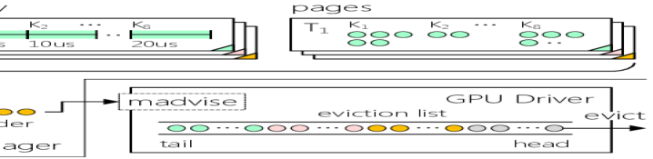
Enforcing the OPT memory scheduling. The coordinator resolves inter-task interleaving using the scheduler’s task timeline. Upon a context switch, the scheduler informs the coordinator of the current timeline, which includes ordered task IDs, currently executing commands, and allocated timeslices of each task. According to Belady’s OPT algorithm [opt-1966], the ideal eviction order is the reverse of the access order. Therefore, the coordinator iterates through the timeline in reverse order and, via shared-memory IPC, instructs each helper to madvise the pages accessed within its assigned timeslice. In the case of Fig. 4, the pages in the eviction list would eventually become, in order: unreferenced across the timeline (grey), Task3’s working set within 30 ms (orange), Task2’s working set in 10 ms (pink), and Task1’s working set in 20 ms (cyan). Consequently, the list head naturally exposes the optimal eviction candidates (pages not needed for the longest time), while the near-term working set resides safely at the tail. Once ordered, the coordinator instructs the helper of the next-to-run task to call migrate to populate its immediate working set (cyan), while evicting idle pages (grey), completing a context switch augmented with memory scheduling.
The optimal eviction order (i.e., page scheduling list in Fig. 4) is dynamic. First, the task timeline may reorder due to the policy’s decisions. Second, workloads like model training, iterative LLM decoding, and Mixture-of-Experts (MoE) models intermittently launch new GPU commands, causing the predicted memory page sets to evolve dynamically. Therefore, the memory manager must perform the complete procedure at every context switch to timely apply the latest page scheduling list to the driver’s eviction list. In practice, this frequency keeps the eviction order effectively optimal, as evidenced by the evaluation results with LLM decoding (Fig. 7 (d)) and DNN training (Fig. 13 (b)).
Page Migration Pipeline
Since page eviction and population dominate the context switching latency, maximizing the migration throughput is critical. We observe that modern GPU architectures provide substantial hardware parallelism, featuring multiple Copy Engines (CEs) capable of concurrent DMA operations [cuda-guide, amd-ce, demystify-rtas24]. Furthermore, interconnects today like PCIe and NVLink-C2C support full-duplex communication [GH200-study-arxiv24], theoretically enabling parallel Device-to-Host eviction (D2H) and Host-to-Device population (H2D). However, we find that the standard migration mechanisms fail to exploit these capabilities, leaving significant bandwidth potential untapped.
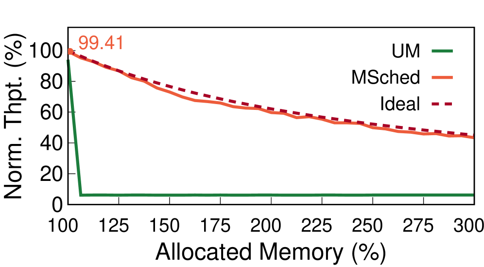
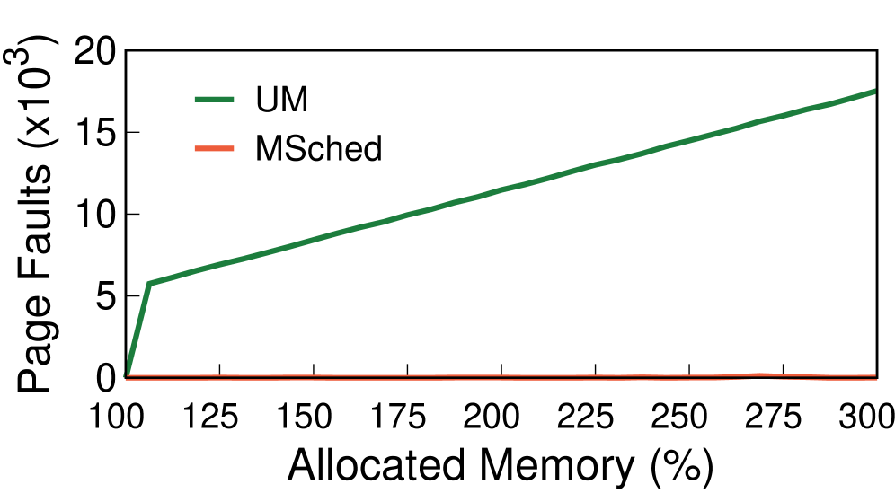
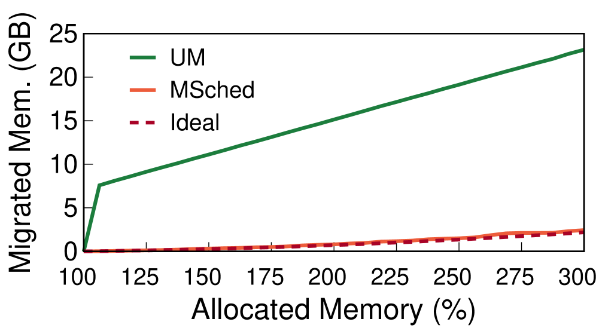
Fig. 5 illustrates the baseline migration workflow in the latest GPU drivers [nvidia-driver-580]. Swapping a page typically entails a serialized sequence of four operations: unmapping the victim page from the GPU page table using a specific command, evicting the victim page to the host (D2H) to reclaim space, populating the target page to the device (H2D), and finally establishing the new mapping. Consequently, the execution of subsequent compute kernels is strictly stalled until the migration of the entire working set completes.
To maximize memory scheduling throughput, MSched implements an efficient page migration pipeline that exploits parallelism between CEs. Concretely, the migrate engine initiates the unmapping and D2H eviction of the first victim page on CE0. Once space is reclaimed, it immediately launches H2D population and mapping of the first target page on CE1 while CE0 proceeds with unmapping and D2H for the second page. This forms a tight pipeline that performs eviction and population in parallel, effectively saturating the full-duplex interconnect bandwidth.
Furthermore, MSched orders page migrations in the predicted access order. This enables early execution: rather than stalling for the entire working set migration, the GPU compute kernel begins execution as soon as its immediate dependency pages are resident. To orchestrate the pipeline dependencies without incurring CPU intervention overhead, MSched utilizes hardware-supported synchronization primitives—GPU trackers and events (two kinds of semaphores on GPUs)—to enforce fine-grained signaling between CEs and CUs. This pipelined design improves hardware utilization and reduces the overhead of proactive memory scheduling.
Evaluation
Experimental setup. The evaluation is mainly conducted on a server equipped with Intel Core Ultra 9 285K (24 cores), 96 GB of DDR5 memory, and an NVIDIA RTX 5080 GPU (16 GB of HBM and PCIe 5.016). The system runs Ubuntu 24.04 with NVIDIA driver 580.95.05 and CUDA toolkit 12.9 installed. MSched extends XSched [xsched-osdi25], an open-source GPU scheduler, and adopts its round-robin (RR) scheduling policy to multiplex all tasks in the system, matching the default time-sharing behavior of commodity GPUs. Note that MSched operates at OS-level and is fully transparent to applications, enabling proactive memory scheduling without any source code modifications or recompilation.
Effectiveness of Proactive Memory Scheduling
Methodology. We first evaluate the mechanistic advantages of proactive memory scheduling over demand paging. We handcraft two kinds of representative GPU tasks: a vector addition task that touches large memory regions within short bursts, and a matrix multiplication task which is compute-bound with high arithmetic intensity. We launch two processes for each type (four concurrent processes in total), continuously issuing tasks. By adjusting vector lengths and number of matrices to be computed, we precisely control the aggregate memory footprint and ensure equal memory consumption across all tasks. We compare MSched’s proactive scheduling against the native demand paging (CUDA UM) and an Ideal baseline, which represents the theoretical performance upper bound calculated using the strict OPT page replacement policy and the hardware’s actual performance metrics.
Performance breakdown. Fig. 6 reports the end-to-end task throughput (normalized to exclusive in-HBM execution without oversubscription), the average number of page faults per task completion, and the average memory migration volume per task completion. As observed, demand paging exhibits a performance cliff immediately upon memory oversubscription (allocated memory over 100%), suffering a staggering 16.2 throughput collapse. This stems from typical GPU workloads’ poor locality and large working sets whose aggregate exceeds HBM capacity, inducing tens of thousands of page faults, severe thrashing, and a surge in total migration. Notably, the recorded migration volume for demand paging is not strictly equal to the product of fault counts and page size (4KB). This is because CUDA UM attempts to prefetch data without precise knowledge of the working set.
In contrast, proactive memory scheduling delivers substantial benefits. At 200% memory subscription, MSched achieves a 9.67 speedup over demand paging. Even under extreme pressure (300% usage), it retains 43.4% of the original in-HBM throughput. This performance gain is attributed to the elimination of page faults (only sporadic occurrences) and the enforcement of the global OPT placement policy, which minimizes the total data movement. Moreover, MSched’s performance is close to the theoretical limit (Ideal), indicating efficient utilization of the hardware. Notably, without oversubscription (100%), MSched retains 99.41% throughput, confirming its negligible runtime overhead (0.59%).
End-to-end Application Performance
| Comb. | Type | Task | |
| A | SciComp | dwt2d, hotspot, cfd, nn | |
| B | MultiDNN | RNet, VGG, Inception, DNet | |
| C | HybridDL | RNet, VGG, Inception, DNet, Llama3 | |
| D | MultiLLM | Llama3 (multiple instances) |
Workloads. We evaluate MSched against native demand paging (UM) under real applications using four task combinations as listed in Table 3. A (SciComp): four representative scientific computing tasks from Rodinia [rodinia-iiswc09] benchmark suite—2D discrete wavelet transform (dwt2d), thermal simulation (hotspot), fluid dynamics solver (cfd), and nearest neighbors search (nn). B (MultiDNN): inference tasks of four classic DNNs using PyTorch—ResNet152(RNet), VGG19, InceptionV3, and DenseNet201 (DNet). C (HybridDL): all tasks in B, combined with an LLM inference task (int8-quantized Llama3-8B via llama.cpp). D (MultiLLM): Multiple concurrent Llama3-8B inference instances. Combinations A, B, and C are relatively compute-intensive, whereas D is memory-bound and sweeps large memory regions within short time windows. Each kind of task runs as an independent process. For each combination, we measure the end-to-end performance under three memory oversubscription pressures: Light (total memory allocation = 150% of HBM capacity), Medium (200%), and Heavy (300%). We control the total memory footprints by scaling problem sizes (for combination A), adjusting inference batch sizes (for B and C), and increasing the concurrent model instance count (for D). Across all testcases, we balance memory usage across tasks as evenly as possible. We then measure task completion throughput for A and DNN models, and decoding throughput for LLMs.
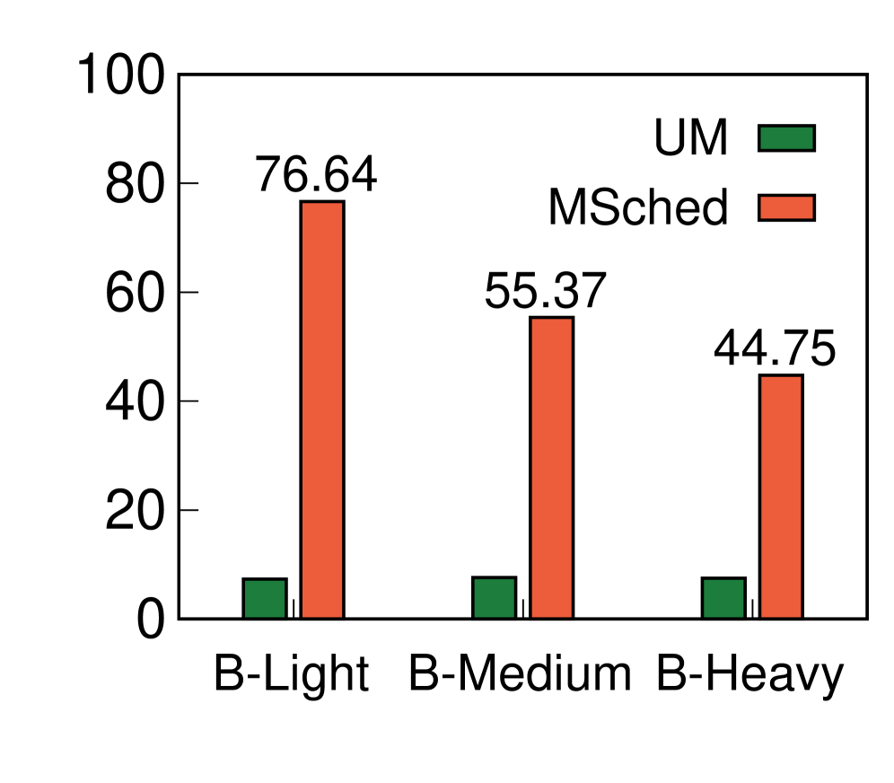
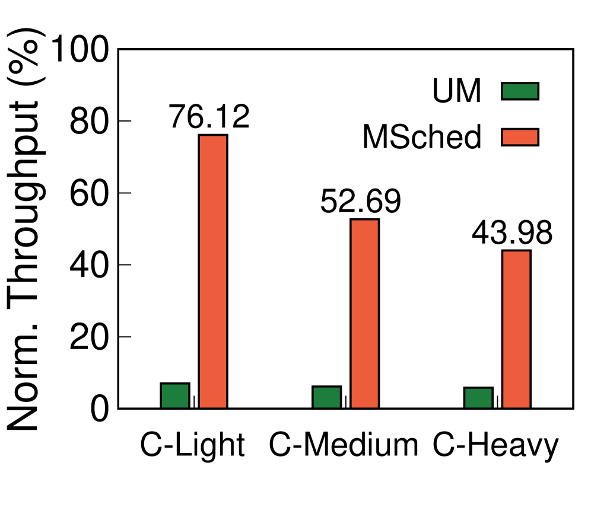
Performance. Fig. 7 depicts the end-to-end throughput across all workload sets, normalized to in-HBM execution. Under memory oversubscription, the native demand paging suffers a catastrophic performance collapse. For the compute-heavy A, B, and C, throughput plummets to an average of 6.19% of in-HBM execution. The degradation is even more severe for the memory-intensive LLM workloads (D), where throughput drops to a mere 1.29%, rendering the GPU practically unusable due to severe page thrashing and IO stalls.
In contrast, MSched consistently delivers superior performance across all workloads. For combinations A, B, and C, MSched achieves average speedups of 11.05, 9.35, and 7.52 under Light, Medium, and Heavy memory pressures, respectively, compared to demand paging. For the LLM workloads (D), the gains are even more pronounced, reaching 57.88, 44.79, and 33.60 improvements. These results align with the micro-benchmark findings in Fig. 6 (a) and closely approach the theoretical optimal limit, confirming the fundamental advantages of proactive memory scheduling in supporting concurrent GPU tasks under memory pressure.
Ablation Study
Impact of prediction accuracy. Table 1 in §2 evaluates the prediction accuracy of the naive allocation-granularity prediction and our template-based prediction under different GPU workloads. While the naive solution maintains a low false negative rate (covers almost all accesses), it suffers from a high false positive rate (most predicted memory are not actually accessed). In contrast, our approach attains near-perfect coverage with zero false positives due to strict template matching. Here, we quantify how this precision gap translates into migration efficiency and application performance. We execute the LLM inference workloads (Combination D in §7.2) using both prediction strategies and measure the average memory migration volume per decode step and the overall throughput.
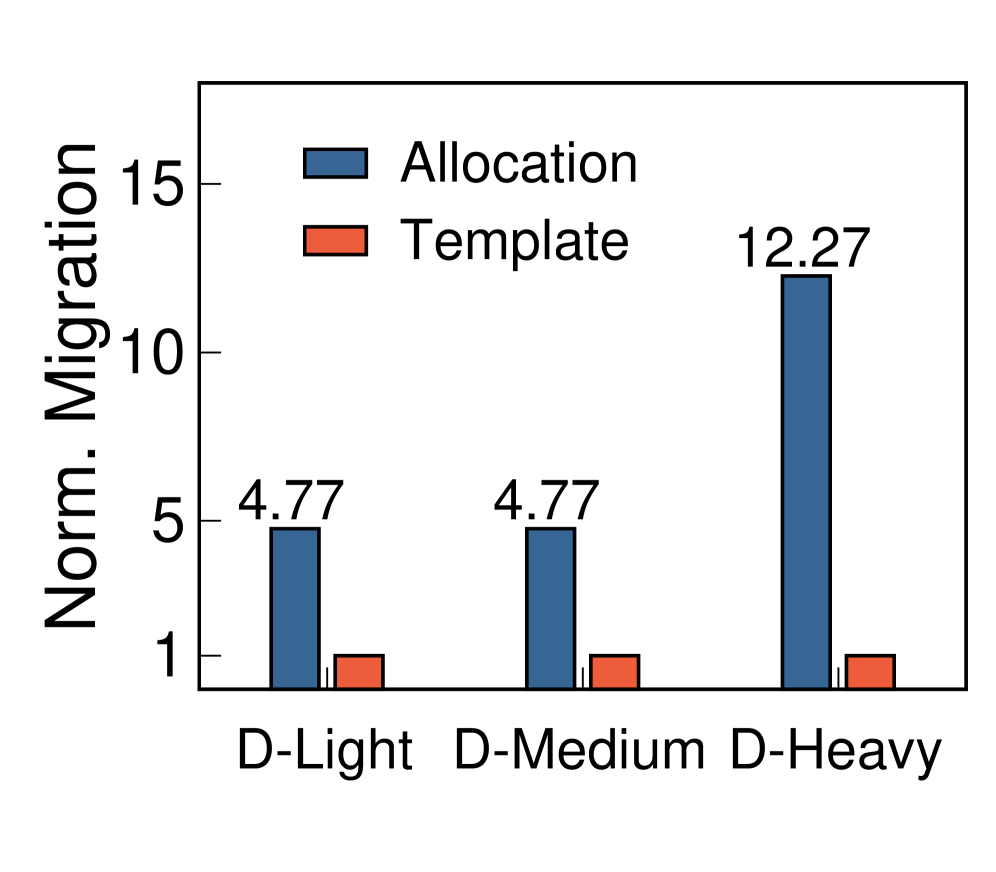
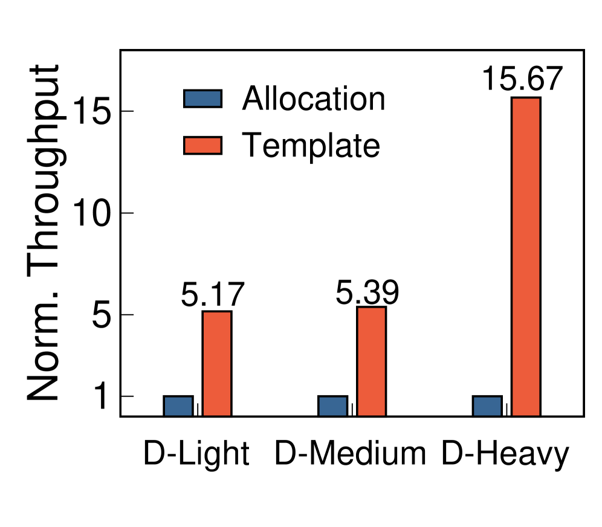
As shown in Fig. 8, under Light and Medium memory pressures, the naive allocation-granularity prediction incurs a 4.77 inflation in migration volume relative to our template-based method, resulting in 5.17 and 5.39 degradation in end-to-end throughput, respectively. This penalty arises primarily from excessive, erroneous preloading that wastes interconnect bandwidth. Furthermore, under Heavy pressure, this inefficiency compounds: migration inflation surges to 12.27. In this case, over-prediction pollutes the scarce HBM with useless data and displaces active working sets of subsequent tasks, precipitating a cascade of eviction and repopulation thrashing. This effect is further amplified under high memory pressure. Consequently, the naive approach suffers a 15.67 throughput drop, nearly erasing the benefits of proactive scheduling. These results underscore that precise working set prediction is indispensable—accuracy directly governs migration efficiency and ultimately determines system-level memory scheduling performance under oversubscription.
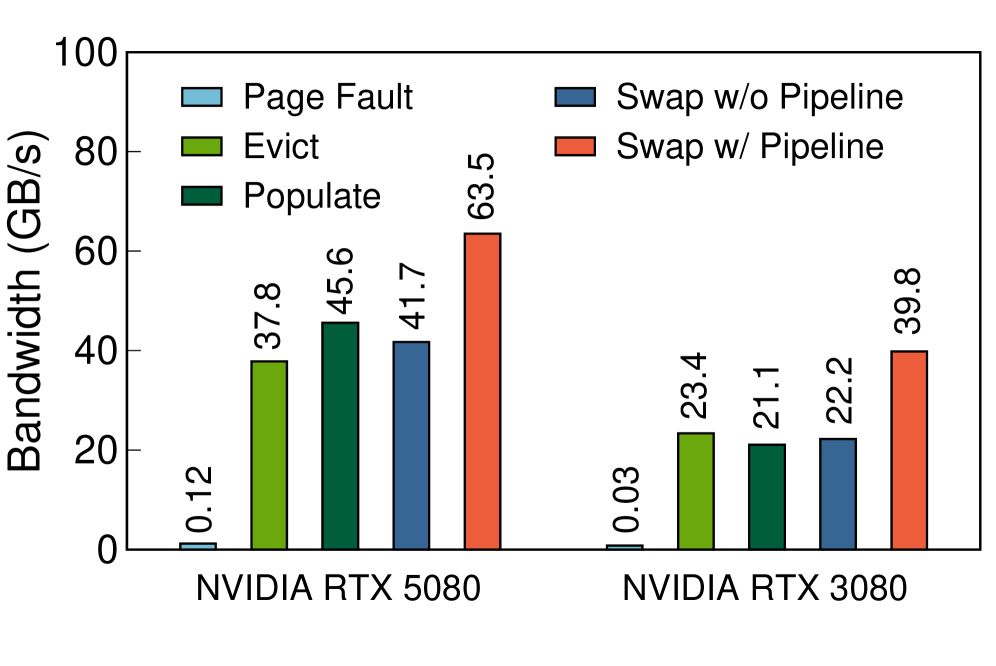
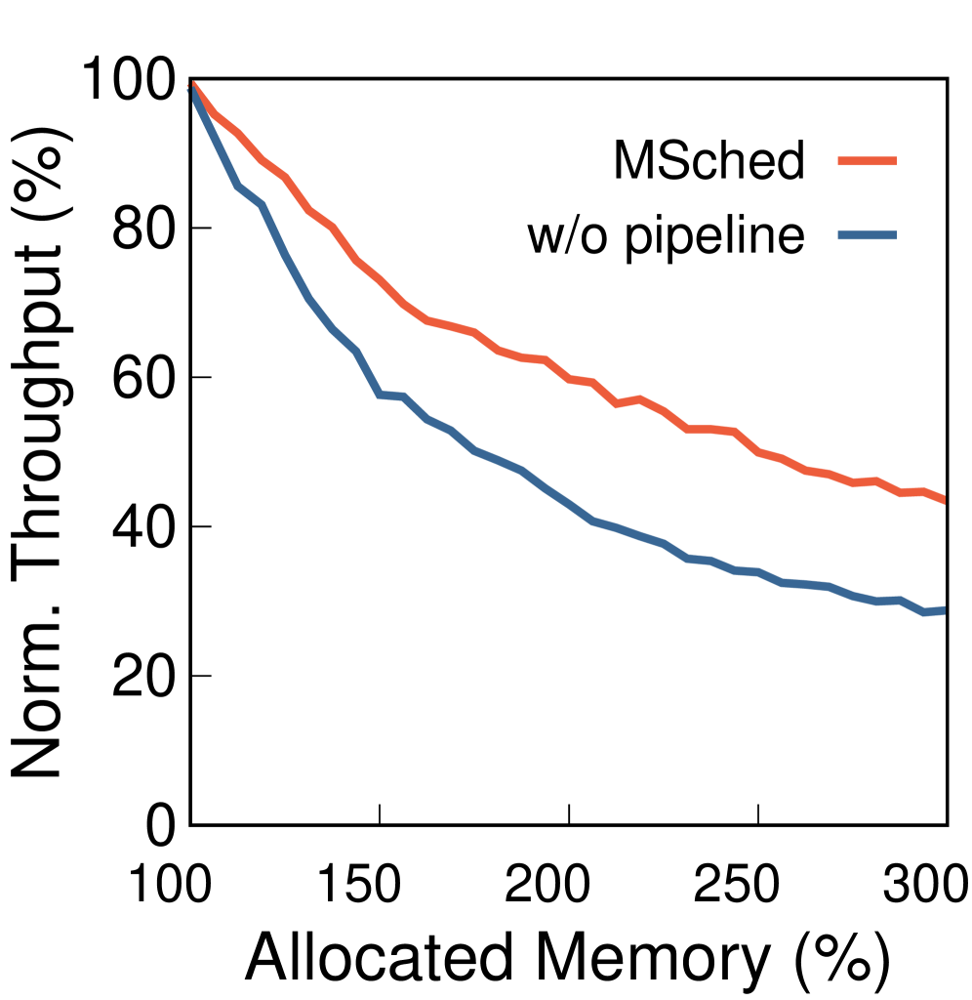
Effectiveness of pipelined migration. We further analyze the impact of the page migration bandwidth between GPU HBM and host CPU DRAM on memory scheduling and evaluate the efficacy of our pipelined migration mechanism. To demonstrate the generality of our approach across different platforms, we add a new testbed equipped with Intel Core i7-13700, 64 GB DDR4 memory, and an NVIDIA RTX 3080 GPU (10 GB HBM, PCIe 4.016).
We first measure the bandwidth of page eviction (D2H including unmapping), page population (H2D including mapping), page swapping (evict then populate) through page faults, and proactive page swapping with and without our pipelined migration technique. As shown in Fig. 9 (a), the effective swap bandwidth without pipeline is limited to the average of D2H and H2D, which is 41.7 GB/s on RTX 5080 and 22.22 GB/s on RTX 3080. In contrast, our pipelined approach overlaps D2H and H2D to exploit the full-duplex interconnect, boosting the effective swap bandwidth to 63.5 GB/s (1.52 speedup) on RTX 5080 and 39.8 GB/s (1.79 speedup) on RTX 3080. Note that throughput on RTX 5080 is still far below the theoretical ceiling of the PCIe 5.016 link (64 GB/s2). We identify a hardware bottleneck between the PCIe root complex and the DRAM in the host CPU. This is a known limitation in the chiplet design of recent Intel desktop CPUs [arrowlake-bottleneck], where the network on-chip (NoC) throttles the traffic between the IO die and the DDR5 controller. This issue is absent in other CPU families or server-grade platforms.
Next, we assess the end-to-end impact using the same workload from §7.1 on RTX 5080. As illustrated in Fig. 9 (b), the improved bandwidth translates directly to performance gains, which scale with memory oversubscription pressure: with pipelined migration, MSched achieves 1.27, 1.39, and 1.51 speedups under 150%, 200%, and 300% subscription, respectively. These results highlight the criticality of migration bandwidth for proactive scheduling. As links continue to scale, with PCIe bandwidth doubling per generation (PCIe 7.016 with 256 GB/s2), and new fabrics like CXL [cxl-survey-csur24] and NVLink C2C (450 GB/s2) [nvlinkc2c, nvlinkc2c-benchmark, GH200-study-arxiv24] becoming available, MSched will benefit proportionally, further improving practicality under aggressive memory oversubscription.
Hardware differences. We evaluate MSched on the two testbeds—RTX 5080 (16GB, PCIe 5.0) and RTX 3080 (10GB, PCIe 4.0)—to illustrate how HBM capacity and interconnect bandwidth affect end-to-end performance. Using the workloads from §7.1, Fig. 10 compares task throughput under varying oversubscribed volumes and ratios. Under equal oversubscribed volume, RTX 5080 consistently outperforms RTX 3080, and the gap widens as volume increases. As the total migration volume is directly related to the absolute oversubscribed volume, this divergence stems primarily from the interconnect bandwidth disparity, matching the results in Fig. 9. Conversely, at equal oversubscription ratio, the two GPUs deliver similar throughput. The absolute oversubscribed volume is smaller for RTX 3080 due to its smaller HBM capacity, partially masking its bandwidth disadvantage.
Overhead Analysis
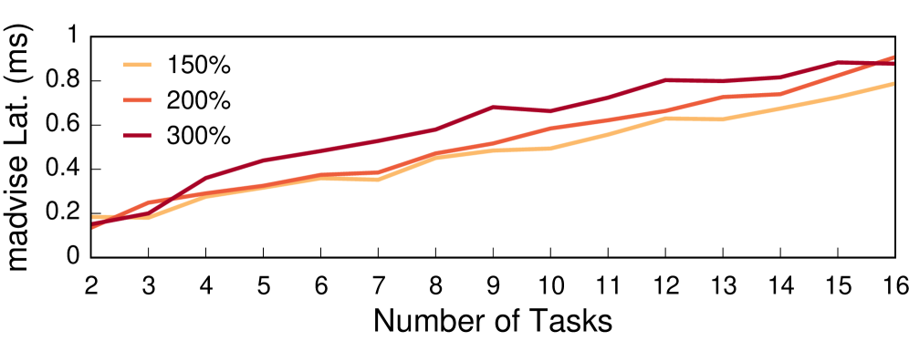
Beyond the data-plane cost of page migration,MSched introduces control-plane overhead, primarily incurred by the synchronous madvise calls of each task required to reorder the driver’s eviction list during context switching. Using the workload from §7.1, we measure the aggregate latency of madvises during a single context switch under varying task counts and memory allocations. As shown in Fig. 11, the latency scales linearly with the number of tasks. Since these handcrafted tasks exhibit constant memory access volume per timeslice, the number of pages to madvise per task remains constant, making the total overhead proportional to the task count. We also observe a slight latency increase under higher memory pressure, attributed to the slower page table lookups within the driver as the total number of allocated pages grows. Even so, within typical task-count ranges (tens of tasks or fewer), the overhead remains under 1 ms, which is negligible compared to the data migration latency.
Comparison with Existing Systems
Paging optimization for single task. Existing OS-level optimizations for GPU demand paging target single-task execution. We compare MSched against SUV [suv-micro24], a state-of-the-art system that employs compile-time static analysis to identify data hotness, guiding memory placement and prefetching. Because SUV relies on data structures of legacy GPU drivers incompatible with latest GPUs, we conduct this comparison on our RTX 3080 testbed. It is worth noting that SUV requires access to kernel source code, precluding support for common deep learning frameworks like PyTorch and llama.cpp which rely on closed-source kernel libraries (e.g., cuDNN, cuBLAS). Consequently, we employ the workloads described in §7.1.
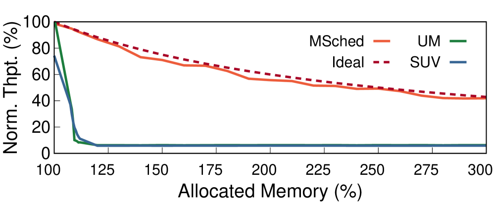
As shown in Fig. 12, SUV exhibits poor performance in multitasking workloads, even slightly worse than the native demand paging. In contrast, MSched delivers substantial gains, achieving a 7.18 throughput improvement over SUV under 300% memory subscription. The gap stems from a fundamental limitation in single-task optimizations: they are oblivious to the drastic working set transitions induced by context switching. Without scheduling-aware coordination, per-task policies collide, causing severe migration conflicts and thrashing. MSched avoids this by inferring the cross-task memory access order using schedule timeline and enforcing a globally optimal, scheduling-aligned page placement policy.
Compute-only scheduling. We finally compare MSched against XSched [xsched-osdi25], representing systems that only schedule GPU computing resources. XSched is a state-of-the-art preemptive GPU task scheduler and delegates memory to demand paging under oversubscription. Beyond the throughput-oriented RR policy used earlier, MSched seamlessly supports other customized policies like the priority policy that targets latency. We emulate a typical cloud colocation scenario mixing Real-Time (RT) tasks which have strict SLOs and runs at high priority and Best-Effort (BE) tasks which improves GPU utilization at low priority and is preempted on RT arrivals. We configure two test cases: using ResNet152 inference as RT task, and either ResNet152 inference (testcase I) or training (testcase T) as BE task. We tune their batch sizes so that RT consumes 6GB memory and BE consumes 12GB.
Fig. 13 shows the results. For RT tasks, MSched proactively restores the working set during context switching, eliminating cold-start page faults. Consequently, MSched reduces the latency of RT tasks by 4.06 on average compared to XSched, improving service quality. Also, MSched’s scheduling-aware OPT placement policy reduces data movement and boosts the throughput of BE tasks by 2.43 on average, thus increasing overall utilization of the GPU hardware. Notably, the speedup for training task is marginally lower than for inference (2.8%), primarily due to its intermittent command launching (§6.2).
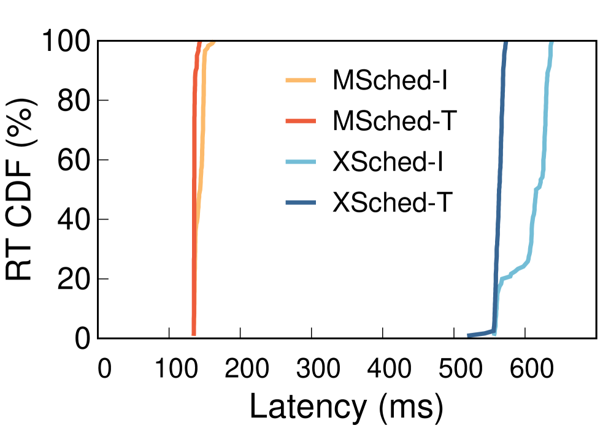
Related Work
GPU scheduling systems. Prior research has extensively explored GPU compute multiplexing techniques. For example, EffiSha [effisha-ppopp17], FLEP [flep-asplos17], PipeSwitch [pipeswitch-osdi20], REEF [reef-osdi22], XSched [xsched-osdi25], and others [chimera-asplos15, gcaps-ecrts24, tally-asplos25, gpreempt-atc25] introduce various GPU preemption mechanisms to enable low-latency task switching. Meanwhile, approaches such as NVIDIA MPS [nvidia-mps], MIG [nvidia-mig], libsmctrl [libsmctrl-rtas23], Baymax [baymax-asplos16], Paella [paella-sosp23], Orion [orion-eurosys24], SGDRC [sgdrc-ppopp25], and LithOS [lithos-sosp25] improve GPU utilization through spatial sharing and enforce resource isolation. Other systems like Clockwork [clockwork-osdi20], TGS [tgs-nsdi23], and Shepherd [shepherd-nsdi23] focus on GPU scheduling policies tailored for deep learning workloads. However, these compute-centric works either implicitly assume that the GPU HBM can accommodate the aggregate memory footprint of all concurrent tasks, or delegate memory oversubscription to the native demand paging mechanism which brings severe performance degradation. In contrast, MSched addresses this by treating task working set as a first-class citizen of the GPU context and proactively schedules memory across concurrent tasks.
Demand paging optimizations for single GPU task. Prior work optimized GPU demand paging (typically CUDA UM) under memory oversubscription by exploiting program access characteristics to guide page eviction and prefetching. Examples include SUV [suv-micro24], DeepUM [deepum-asplos23], Sentinel [sentinel-hpca21], SwapAdvisor [swapadvisor-asplos20], and others [snurhac-hpdc21, huvm-atc22, earlyadaptor-ispass23]. Others, such as Forest [forest-isca25], ETC [etc-asplos19], and SMC [smc-icpp24], redesign hardware to improve demand paging routine and introduce specialized units (e.g., memory compressors) to reduce page migration overhead. However, these systems are tailored for single-task execution and unaware of concurrency. Applying them in multitasking scenarios creates severe cross-task page conflicts and thrashing, as evidenced in Fig. 12. In comparison, MSched co-designs the scheduler and memory manager, leveraging the global task timeline to avoid inter-task conflicts and enforce optimal page placement policy.
In-application GPU memory swapping. Prior work implemented numerous application-level swapping techniques to circumvent HBM constraints, offloading model parameters [clockwork-osdi20, pipeswitch-osdi20, moelightning-asplos25, sirius-atc25, powerinfer-sosp24], KV cache [lmcache-arxiv25], and tensors [capuchin-asplos20] to host CPU DRAM. Others spill GPU data to disk [powerinfer2-arxiv24, llminflash-arxiv24, flexgen-arxiv23] or offload across network [mooncake-fast25, kunserve-arxiv24, llumnix-osdi24, blitzscale-osdi25]. Conversely, MSched operates at OS-level and is compatible with these in-application swapping solutions, as MSched can accurately identify the actually accessed memory during runtime.
Conclusion
This paper presents MSched, the first OS-level scheduler tailored for memory-oversubscribed GPU multitasking. By leveraging the memory predictability of GPU tasks, MSched extends GPU context switching to include proactive working set scheduling. Our experiments demonstrate its effectiveness on varying workloads.